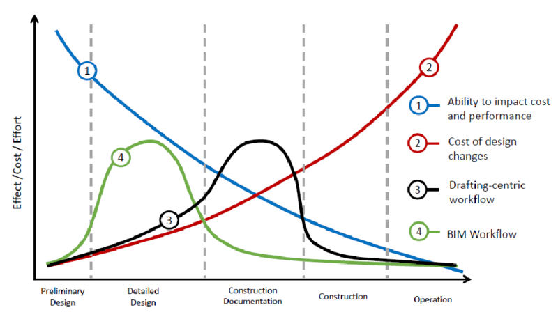

If you’ve moved from 2D drawings to 3D modeling — congrats. That’s a big leap. But the real value of BIM isn’t the
geometry; it’s the information embedded, organized, and shared through the model. That’s where decisions
speed up, coordination gets cleaner, and rework drops. Back in 2004, Patrick sketched a tidy set of curves to
make exactly this point. The MacLeamy Curve’s punchline is simple: push effort earlier to avoid expensive late changes.
We’ll unpack the curve next.
הקדמה
אם עברתם משרטוטי 2D למידול 3D — כל הכבוד. זה צעד גדול. אבל הערך האמיתי של BIM אינו רק הגיאומטריה, אלא
המידע שמוטמע ונשמר בצורה מרוכזת במודל. המעבר לBIM הוא שינוי תפיסה של השקעת המאמץ במחשבה תחילה כדי למזער קבלת החלטות "תוך כדי תנועה".
כבר ב‑2004 פטריק מקלימי שירטט סט עקומות כדי להדגים בדיוק את זה. המסקנה של עקומת מקלימי פשוטה: משקיעים מאמץ
בתכנון מוקדם כדי למנוע שינויים מאוחרים ויקרים.
The Curve Explained
In 2004, Patrick MacLeamy sketched a set of curves from a near self‑evident truth: the more developed a
project is, the harder it is to change. The truly earth‑shattering part? He named the curve after himself. The plot shows
design effort and cost of change over the project timeline.
In traditional delivery, we spend most effort right when changes are most expensive. BIM advocates shift — front‑load — the
effort earlier so late‑stage changes are fewer and cheaper.

MacLeamy Curve: ability to impact cost (blue) declines while cost of changes (red) rises; BIM (green) shifts effort earlier vs drafting-centric (black).
But there’s a catch: this only works when BIM is managed. Without standards, oversight, and feedback loops,
the promised curve flattens — and you end up doing the work late anyway.
עקומת מקלימי
בשנת 2004 פטריק מקלימי שירטט סט עקומות מתוך אמת כמעט מובנת מאליה: ככל שהפרויקט מתקדם, קשה ויקר יותר לבצע שינויים.
עד אז, מרבית הזמן הוקדש ליצירת שרטוטים דו־ממדיים. התוצאה הייתה תכנון חלקי בלבד, שהותיר מקום נרחב לפרשנויות ודרש קבלת החלטות בזמן אמת כאשר התגלו אי־התאמות, בין אם בייצור ובין אם בשטח.
הגרף מציג מאמץ תכנוני ועלות שינוי לאורך ציר הזמן של הפרויקט:
היכולת להשפיע על עלות (כחול) יורדת. עלות שינויים (אדום) עולה. BIM (ירוק) מקדים מאמץ לעומת שיטה שרטוטית (שחור).
בשיטה המסורתית אנחנו משקיעים את המאמץ כשהשינויים הם יקרים. עם BIM תמיד מקדימים את המאמץ, כך שיש
פחות שינויים מאוחרים והם זולים יותר.
הקאצ׳ הוא שזה עובד רק עם ניהול BIM נכון. בלי הגדרות ברורות, פיקוח וסטנדרטיזציה – ההבטחה נעלמת. המאמץ הראשוני הופך לעומס מסורבל כשצריך לרכז כמויות מידע ולהנגיש אותו לכל המעורבים בפרויקט. לכן יצרנים רבים פונים לאאוט-סורסינג, אבל בלי כללים ברורים התוצאה עלולה להיראות כמו המערב הפרוע.
What BIM Management Really Is
BIM management is the practice of setting standards, tooling, and oversight so model information stays consistent,
searchable, and reusable across projects.
Enforcing firm requirements and regulations.
Catalog handling and maintenance.
Customizing reports, drawings, and templates.
Setting up and maintaining firm folders and cloud integrations.
Using the advanced settings and editors of the software.
ניהול BIM הוא קביעת סטנדרטים, שימוש בכלים מתאימים ופיקוח רציף כך שהמידע במודל יישאר עקבי, ניתן לחיפוש ושמיש. ניהול נכון מאפשר שימוש חוזר בין פרויקטים, כך שהמשרד מטמיע לקחים, מצמצם חיכוך, והמאמץ הראשוני הופך לקל יותר ויותר ככל שהמשרד צובר ניסיון.
אכיפת דרישות ותקנות של המשרד ומזמין העבודה.
ניהול ותחזוקת קטלוגים.
התאמה אישית של דוחות, שרטוטים ותבניות.
הקמה ותחזוקה של תיקיות Firm ואינטגרציות לענן.
שימוש בהגדרות מתקדמות ובעורכים של התוכנה.
פיקוח: בקרת איכות, בדיקות התנגשות, עקביות בפרטים.
Why It’s a Separate Role
It’s customary not to pile BIM management on a working detailer — for the reasons above. Yet hiring a dedicated manager can
feel heavy for newcomers to BIM and even for veteran teams. CEOs and existing managers often lack the hands‑on technical
skills to implement the standards they want. We treat this as a solvable gap. At BIMbee, we’re Tekla Partners with the
permission and skills to enhance the software with code, so we can provide these capabilities laterally across the industry
and ensure no team gets left behind. Our tools let managers and CEOs inject automation where management needs it — turning
standards into helpful clicks and checks that lighten the workload.
למה זה תפקיד נפרד מהדיטיילר
נהוג שלא להעמיס ניהול BIM על דיטיילר שעובד, ולמנכ"לים וסמנכ"לים לרוב חסר את המיומנות הטכנית כדי ליישם את הניהול שהם רוצים.
לכן בעולם המקצועי זהו תפקיד ייעודי שמגשר בין הדרישות מבעלי העניין לקצות האצבעות של הדיטיילרים שאחראיים לדייק את התכנון. ובכל זאת, גיוס בעל תפקיד ייעודי יכול להיות כבד גם לחדשים ב‑BIM וגם לוותיקים.
אנחנו רואים בזה פער שניתן לפתור. כשותפים עם הרשאה ומיומנות להרחיב את הTekla באמצעות קוד, אנו מספקים את היכולות הללו לרוחב התעשייה כדי שהענף שלנו לא יישאר מאחור.
Rooting BIM Management Deeper with Developers & Automation
Automation lets management live inside the workflow. Instead of a “pesky manager” reminding rules, customization can
turn standards into buttons and checks that help the detailer.
Example: a single click that checks compliance and removes a repetitive headache — enforcement and relief in the
same action. Traditional management creates consistency; automation roots it deeper and makes it inviting.
להעמיק את ניהול ה‑BIM עם מפתחים ואוטומציה
אוטומציה היא היכולת ליצור כפתור ייעודי בתוך התוכנה, שמבצע פעולה מוגדרת לפי הצרכים וההיגיון של הארגון. במקום שמנהל יצטרך להזכיר כללים שוב ושוב, הכפתור והבדיקות הופכים את הסטנדרטים לחלק חי מהעבודה היומיומית ומסייעים לדיטיילר בזמן אמת.
הכפתור הזה יכול להקל משמעותית על חיי הדיטיילר. הוא חוסך עבודה ידנית עם קיצור רצף קליקים מיותר, וביצוע פעולות קפדניות כמו לדוגמא בדיקות מודל מסובכות, יצירת מידות אוטומטית בשרטוטים, ייצוא תיק מסודר לייצור, ועוד. כל זה תוך שמירה על תקינות ארגונית.
עם לוגיקה חכמה, בלחיצה אחת אפשר להשיג שני יעדים — גם לאכוף דרישות ניהוליות של המשרד וגם לחסוך לדיטיילר מאמץ וכאבי פרקים מעבודה ידנית.
Outcome
[Placeholder] Traditional BIM Mgmt vs. BIM + Automation — parallel to MacLeamy: productivity ↑, changes ↓, morale ↑
Relieves detailers instead of burdening them.
Boosts productivity, accuracy, and team morale.
Raises client satisfaction with reliable, standardized outputs.
תוצאה
[מציין מקום] ניהול BIM מסורתי מול BIM + אוטומציה — במקביל לעקומת מקלימי: פרודוקטיביות ↑, שינויים ↓, מורל ↑
שומר על סדר ואחידות ארגונית.
מקל על הדיטיילרים במקום להעמיס.
מעלה פרודוקטיביות, דיוק ומורל צוותי.
מגדיל שביעות רצון לקוחות בזכות תוצרים עקביים ואמינים.
Who We Are & What We Represent
At BIMbee, we know BIM detailing first‑hand and we’re trained in BIM management — while also being fluent in code.
We’re part of the Tekla Partners Program with an official license to extend the software with code. Our experience in
both traditional practices and custom automation puts us in a unique position: we feel the pain‑points and we know how
to address them with software.
That’s why we offer ready‑to‑use solutions anyone can adopt quickly, and we’re curious and open to new industry needs.
מי אנחנו ומה אנחנו מייצגים
גם אנחנו ב-BIMbee התחלנו כדיטיילרים וחווינו מקרוב את העבודה, מה שכבר אז הוביל אותנו לפתח פתרונות אוטומציה כדי להקל על העומס ולייעל תהליכים.
עם הזמן הכשרנו דיטיילרים נוספים, ושילבנו צוותים בפרויקטים מורכבים שדרשו ידע מעמיק בניהול BIM. מתוך הצורך להפחית דרישות עודפות ולא להכביד על עובדים, יצרנו כלים עם כפתורים ייעודיים שחוסכים זמן וכסף ומביאים ביטחון ושקט תפעולי.
המשכנו להתעמק בלימוד ספריית הקוד של Tekla והתקבלנו ל-Tekla Partners Program המאפשר לנו לפתח הרחבות לתוכנה. היום אנחנו ממנפים את הידע הזה לכדי כלים נגישים ואינטואיטיביים שמספקים לארגונים יתרונות של ניהול BIM חכם בלי צורך בתפקיד ייעודי, מכשירים עובדים חדשים, ומעלים את הרמה הארגונית.
אנו תמיד מכוונים למטרה אחת: להפוך את מה שמבאס ומעכב לכפתור אחד פשוט שעושה בדיוק את מה שאתם צריכים.
Tekla Partners Program Badge (Placeholder – insert badge image here)
Services We Provide
Setup and oversight of BIM management (catalogs, layouts, reports, quality control, integration).
Seamless automation embedded into your workflow (custom tools, one‑click buttons, consistency checks).
Ready‑made solutions to get you started today.
Custom‑tailored development for firms that want to go further.
Call to Action: Talk to us about how BIM management rooted in automation can improve your
workflow, boost worker happiness, and deliver better project outcomes.
שירותים שאנחנו נותנים
ניהול BIM או עזרה וייעוץ בנושא (קטלוגים, לייאאוטים, דוחות, בקרת איכות, אינטגרציה).
אוטומציה שמשתלבת בזרימת העבודה הקיימת.
פתרונות מדף להתחלה מהירה.
פיתוח מותאם אישית למשרדים ובעלי עניין עם אתגר ייחודי.
אם משהו מזה נשמע רלוונטי עבורכם, דברו איתנו. נשמח לשמוע, לשתף פתרונות מתאימים או פשוט להכיר שותפים חדשים בשיחת ייעוץ חינמית.
Conclusion
BIM is not just 3D; it’s about managing and centralizing information. Put emphasis on BIM management and the system
runs smoothly. Add automation, and enforcement turns into ease. The future isn’t only about catching up to standards —
it’s about moving ahead with integrated development and smarter workflows.
סיכום
BIM הוא הרבה יותר מתלת־ממד. מדובר בריכוז חכם של מידע רב במקום אחד, היוצר פלטפורמה אחידה לקבלת החלטות כבר בשלבים מוקדמים.
המידע המחושב הזה מופץ בצורה יעילה להמשך של ייצור והרכבה בשטח, ולעיטים ממשיך ומלווה את המבנה לתפעול השוטף.
כאשר מתמקדים בניהול נכון של BIM, המערכת באמת פועלת כפי שיועדה מלכתחילה. שילוב אוטומציה מעמיקה את דרישות הניהול והופכת אכיפה לנוחות.
Questions or suggestions? The contact form is open.